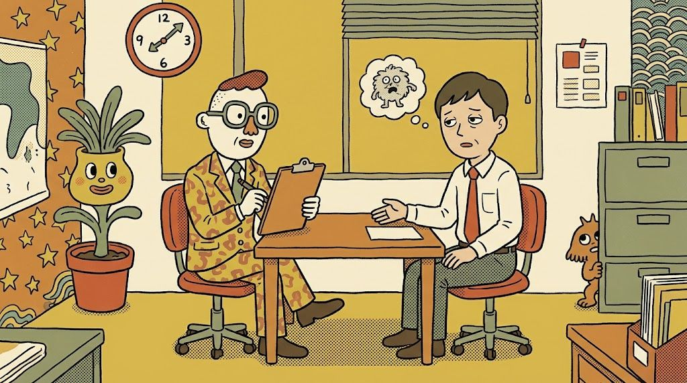

1
科目1 労働者の健康管理
2時間です。衛生管理者の方は、審査で承認されると免除になります。
労働者の健康管理の全体像と、ストレスチェックが法令のなかでどこに位置づくかを学びます。健康診断や長時間労働者への面接指導とのつながり、個人情報の扱い、不利益な取扱いの禁止まで押さえます。
受講後は、事業者や衛生委員会から「何を、どの順番で、誰が担うのか」と聞かれたときに、根拠を示して説明できるようになります。実施者として、ほかの専門職や人事担当と同じ言葉で話せる土台ができます。
 星心会
相談する
星心会
相談する労働安全衛生法に基づく実施者養成研修
歯科医師・看護師・精神保健福祉士・公認心理師の方が対象です。
Google Meetでの便利なオンライン受講
電話 059-315-0697

科目は3つで、合計5時間です。
1
2時間です。衛生管理者の方は、審査で承認されると免除になります。
労働者の健康管理の全体像と、ストレスチェックが法令のなかでどこに位置づくかを学びます。健康診断や長時間労働者への面接指導とのつながり、個人情報の扱い、不利益な取扱いの禁止まで押さえます。
受講後は、事業者や衛生委員会から「何を、どの順番で、誰が担うのか」と聞かれたときに、根拠を示して説明できるようになります。実施者として、ほかの専門職や人事担当と同じ言葉で話せる土台ができます。
2
1.5時間です。
セルフケア、ラインによるケア、事業場内産業保健スタッフ等によるケア、事業場外資源によるケアの「4つのケア」を軸に、事業場のメンタルヘルス対策の進め方を学びます。ストレスチェックの準備から実施、結果の通知、医師による面接指導、職場環境の改善までの流れを、実務の順番で整理します。
受講後は、事業場ごとの規模や体制に合わせて、実施計画づくりや衛生委員会での審議を支えられるようになります。小規模の事業場でも無理なく回せる進め方を提案できます。
3
1.5時間です。労働者個人と、職場の集団への支援の方法を扱います。
個人への支援では、高ストレスと判定された方への声かけ、相談の受け止め方、医師による面接指導や社内外の相談先へのつなぎ方を学びます。集団への支援では、集団分析の結果の読み方と、職場環境の改善につなげる進め方を学びます。
受講後は、結果を返して終わりにせず、一人ひとりの相談と職場全体の改善の両方に関われるようになります。働く人が安心して力を出せる職場づくりに、専門職として直接かかわれます。
1
申込ページで受講者アカウントを作ります。
2
保有資格を確認します。科目1の免除を希望する方は、ここで証明を提出してください。
3
募集中の開催回から、受講する日時を選びます。
4
Squareのカード決済でお支払いください。入金を確認したら予約が確定します。
歯科医師・看護師・精神保健福祉士・公認心理師
Google Meetによるリアルタイム開催です。受講中はカメラをオンにしてください。
西岡愛梨（保健師）
3科目一括 12,800円
科目1免除（衛生管理者・審査承認後） 10,800円
開催回ごとに申込ページで募集します。
Squareカード決済
振替を優先します。返金は、開催7日前までは全額（決済手数料の実費を差し引く場合があります）、6日前から前日までは半額、当日以降と無断欠席は返金なしです。主催者の都合で中止する場合は全額を返金します。
申込ページからお申し込みください。
研修の内容は、厚生労働省の次の資料に基づいています。
歯科医師・看護師・精神保健福祉士・公認心理師の方です。
Google Meetのリアルタイム開催です。受講中はカメラをオンにしてください。
科目1（労働者の健康管理）2時間、科目2（事業場におけるメンタルヘルス対策）1.5時間、科目3（個人・集団への支援）1.5時間の計5時間です。
3科目一括で12,800円（税込）です。衛生管理者の方は、審査で承認されると科目1が免除になり10,800円（税込）です。
Squareのカード決済です。
振替を優先します。返金は、開催7日前までは全額（決済手数料の実費を差し引く場合があります）、6日前から前日までは半額、当日以降と無断欠席は返金なしです。
申込ページでアカウントを作り、資格確認、開催回の選択、決済の順に進みます。
法定の実施者養成研修とは別に、任意の実務研修をこのページの後半に掲載しています。資格の付与や、法定研修の修了にはあたりません。
法定の実施者養成研修とは別の、任意の実務研修です。資格の付与や、法定の実施者養成研修の修了にはあたりません。
法定研修で学ぶ基礎から進み、ストレスチェックの実務を進められるよう練習します。
個別で、1コマ90分を2コマ行います。合計3時間です。料金は30,000円です。
相談は相談フォーム、または電話 059-315-0697 です。
実施の準備、事業場との打合せ、役割分担、調査票や受検案内、情報管理を扱います。
結果の扱い、高ストレス者の選定、医師による面接指導へのつなぎ、集団分析、報告を、模擬事例で練習します。
練習には模擬事例だけを使います。実在の顧客や、健康に関するデータは使いません。
法定の養成研修は申込ページから進めます。内容の相談は相談ページ、または電話です。
電話 059-315-0697